Time series
Contents
Temporal and spatial dependence
Properties of time series
ARIMA models for time series
Fitting ARIMA models in R
Producing forecasts from a model
Temporal correlations in additive and Bayesian models
Temporal and spatial dependence
The temporal or spatial dependence present in many datasets is due to the fact that observations that are close together, in time or space, are more similar than those that are far apart.
In a spatial context, this principle is sometimes referred to as the “First Law of Geography” and is expressed by the following quote from Waldo Tobler: “Everything is related to everything else, but near things are more related than distant things.”
In statistics, we often refer to “autocorrelation” as the correlation between measurements of the same variable taken at different times or places.
Intrinsic or induced dependence
There are two fundamental types of spatial or temporal dependence on a measured variable \(y\): an intrinsic dependence on \(y\), or a dependence induced by external variables influencing \(y\), which are themselves correlated in space or time.
For example, suppose that the growth of a plant in the year \(t + 1\) is correlated with the growth of the year \(t\):
if this correlation is due to a correlation in the climate that affects the growth of the plant between successive years, it is an induced dependence;
if the correlation is due to the fact that the growth at time \(t\) determines (by the size of leaves and roots) the quantity of resources absorbed by the plant at time \(t+1\), then it is an intrinsic dependence.
Now suppose that the abundance of a species is correlated between two closely spaced sites:
this spatial dependence can be induced if it is due to a spatial correlation of habitat factors that favor or disadvantage the species;
or it can be intrinsic if it is due to the dispersion of individuals between close sites.
In many cases, both types of dependence affect a given variable.
If the dependence is simply induced and the external variables that cause it are included in the model explaining \(y\), then the model residuals will be independent and we can use all the methods already seen that ignore temporal and spatial dependence.
However, if the dependence is intrinsic or due to unmeasured external influences, then the spatial and temporal dependence of the residuals in the model will have to be taken into account.
Different ways to model spatial and temporal effects
In this class and the next, we will directly model the temporal and spatial correlations of our data. It is useful to compare this approach to other ways of including temporal and spatial aspects in a statistical model, which have been seen previously.
First, we could include predictors in the model that represent time (e.g., year) or position (e.g., longitude, latitude). Such predictors can be useful for detecting a systematic large-scale trend or gradient, whether or not the trend is linear (e.g., with an additive model).
In contrast to this approach, the models we will now see are used to model a temporal or spatial correlation in the random fluctuations of a variable (i.e., in the residuals after removing any systematic effect).
In previous classes, we have used random effects to represent the non-independence of data on the basis of their grouping, i.e., after accounting for systematic fixed effects, data from the same group are more similar (their residual variation is correlated) than data from different groups. These groups were often defined according to temporal (e.g., observations in the same year) or spatial (observations at the same site) criteria.
However, in the context of a random group effect, all groups are equally different from each other. That is, data from 2000 are not necessarily more or less similar to those from 2001 than to those from 2005, and two sites within 100 km of each other are not more or less similar than two sites 2 km apart.
The methods we will see here therefore allow us to model non-independence on a continuous scale (closer = more correlated) rather than just discrete (hierarchy of groupings).
The methods seen in this class apply to temporal data measured at regular intervals (e.g.: every month, every year). The methods in the next class apply to spatial data and do not require regular intervals.
Properties of time series
R packages for time series analysis
In this class, we will use the package fpp3 that accompanies the textbook of Hyndman and Athanasopoulos, Forecasting: Principles and Practice (see reference at the end).
library(fpp3)This package automatically installs and loads other useful packages for time series visualization and analysis.
Structure and visualization of time series data
The pelt dataset included with the fpp3 package shows the number of hare and lynx pelts traded at the Hudson’s Bay Company between 1845 and 1935. This is a famous dataset in ecology due to the presence of well-defined cycles of predator (lynx) and prey (hare) populations.
data(pelt)
head(pelt)## # A tsibble: 6 x 3 [1Y]
## Year Hare Lynx
## <dbl> <dbl> <dbl>
## 1 1845 19580 30090
## 2 1846 19600 45150
## 3 1847 19610 49150
## 4 1848 11990 39520
## 5 1849 28040 21230
## 6 1850 58000 8420The pelt object is a temporal data frame or tsibble. This term comes from the combination of ts for time series and tibble (which sounds like table), a specialized type of data frame. The particularity of tsibble objects is that one of the variables, here Year, is specified as a time index while the other variables define quantities measured at each point in time.
The autoplot function automatically chooses a graph appropriate to the type of object given to it. By applying it to a tsibble, we can visualize the variables over time. The second argument is used to specify the variable(s) to be displayed; here we choose the two variables, which must be grouped in the function vars.
autoplot(pelt, vars(Hare, Lynx))
Note that the \(x\)-axis indicates the time between each observation, i.e. [1Y] for 1 year.
Since the autoplot function produces a ggplot graph, we can customize it with the usual options, e.g. customize the axis titles.
autoplot(pelt, vars(Hare, Lynx)) +
labs(x = "Year", y = "Pelts traded")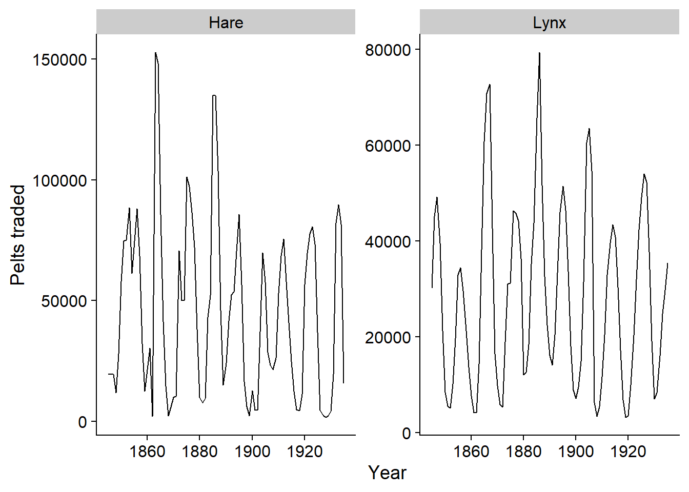
The sea_ice.txt dataset contains daily data of the ice surface in the Arctic Ocean between 1972 and 2018.
Spreen, G., L. Kaleschke, and G.Heygster (2008), Sea ice remote sensing using AMSR-E 89 GHz channels J. Geophys. Res.,vol. 113, C02S03, doi:10.1029/2005JC003384.
Since this is not a .csv file (comma-delimited columns), but rather columns are delimited by spaces, we must use read.table. We must also manually specify the names of columns that are absent from the file.
ice <- read.table("../donnees/sea_ice.txt")
colnames(ice) <- c("year", "month", "day", "ice_km2")
head(ice)## year month day ice_km2
## 1 1972 1 1 14449000
## 2 1972 1 2 14541400
## 3 1972 1 3 14633900
## 4 1972 1 4 14716100
## 5 1972 1 5 14808500
## 6 1972 1 6 14890700To convert the three columns year, month and day into a date, we use the function make_date. We also convert the ice surface to millions of km\(^2\) to make the numbers easier to read. We remove the superfluous columns and convert the result to tsibble with the function as_tsibble, specifying that the column date is the time index.
ice <- mutate(ice, date = make_date(year, month, day),
ice_Mkm2 = ice_km2 / 1E6) %>%
select(-year, -month, -day, -ice_km2)
ice <- as_tsibble(ice, index = date)
head(ice)## # A tsibble: 6 x 2 [1D]
## date ice_Mkm2
## <date> <dbl>
## 1 1972-01-01 14.4
## 2 1972-01-02 14.5
## 3 1972-01-03 14.6
## 4 1972-01-04 14.7
## 5 1972-01-05 14.8
## 6 1972-01-06 14.9Note the indication [1D] meaning that these are daily data.
The functions of the dplyr package also apply to tsibble, with a few changes. The most important is the addition of an index_by function, which acts as group_by but allows to group rows by time period. This is useful for aggregating data on a larger time scale. Here we group the dates by month with the yearmonth function and then calculate the mean ice area by month.
ice <- index_by(ice, month = yearmonth(date)) %>%
summarize(ice_Mkm2 = mean(ice_Mkm2))
head(ice)## # A tsibble: 6 x 2 [1M]
## month ice_Mkm2
## <mth> <dbl>
## 1 1972 janv. 15.4
## 2 1972 févr. 16.3
## 3 1972 mars 16.2
## 4 1972 avr. 15.5
## 5 1972 mai 14.6
## 6 1972 juin 12.9Seasonality
The series of ice surface measurements shows a general downward trend due to global warming, but also a strong seasonal pattern (increase in winter, decrease in summer).
autoplot(ice)## Plot variable not specified, automatically selected `.vars = ice_Mkm2`
In time series analysis, seasonality refers to a variation that repeats itself over a fixed and known period of time (e.g., week, month, year).
Two types of graphs allow us to visualize time series with a seasonal component. First, gg_season places each season (here, R automatically chooses the months) on the \(x\) axis, then superimposes the different years with a color code. Note that it is not necessary to specify the variable to be displayed, i.e. ice_Mkm2, because the table contains only one.
gg_season(ice)## Plot variable not specified, automatically selected `y = ice_Mkm2`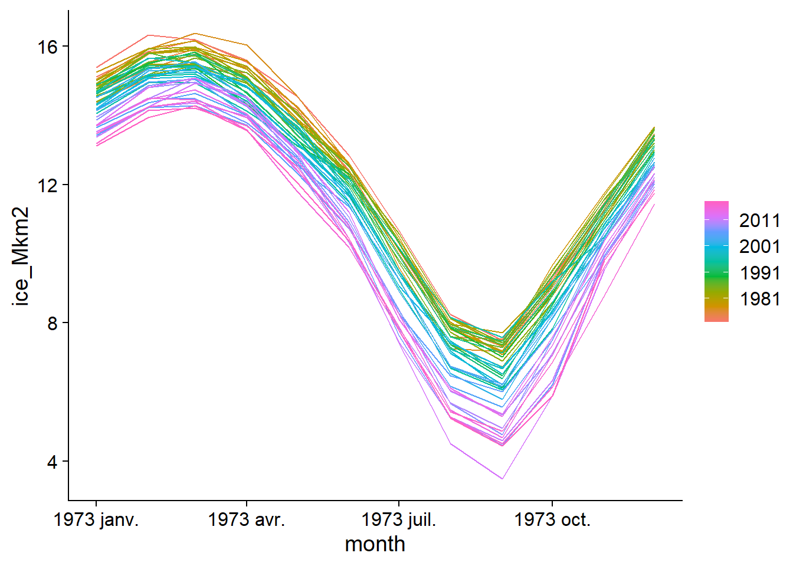
The annual fluctuation with a maximum in March and a minimum in September, as well as the trend towards a smaller ice surface in recent years is clearly visible here.
The seasonal subseries graph separates the data for the different months to show the trend between the data for the same month over time, as well as the mean level for that month (blue horizontal line).
gg_subseries(ice)## Plot variable not specified, automatically selected `y = ice_Mkm2`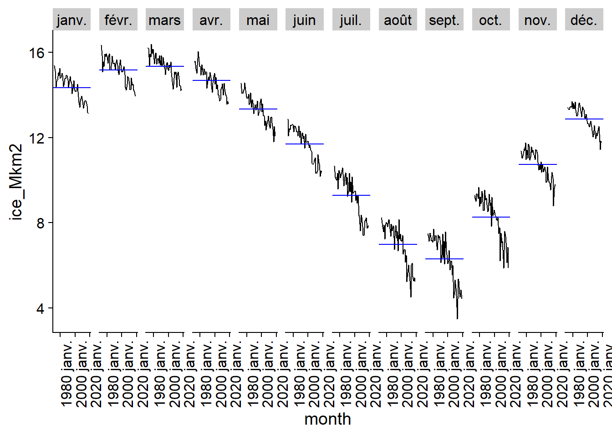
As their name suggests, the gg_season and gg_subseries graphs are also ggplot graphs.
Components of a time series
We can now present in a more formal way the different components of a time series.
A trend is a directional change (positive or negative, but not necessarily linear) in the long-term time series.
Seasonality refers to repeated fluctuations with a known fixed period, often associated with the calendar (annual, weekly, daily, etc.).
A cycle, in the context of time series, refers to fluctuations that are repeated, but not according to a period fixed by a calendar element. For example, the fluctuations in the lynx and hare populations in the previous example do not have a completely regular amplitude or frequency. Economic cycles (periods of growth and recession) are another example of cyclical behavior generated by the dynamics of a system. These cycles are usually on a multi-year scale and are not as predictable as seasonal fluctuations.
Finally, once trends, cycles and seasonal variations have been subtracted from a time series, there remains a residual also called noise.
Different models exist to extract these components from a given time series. Chapter 3 of the Hyndman and Athanasopoulos textboook presents these models in more detail, but only a brief example will be shown here.
The R code below applies a model to the ice series, using the STL decomposition method. Then the function components extracts the components of the result, then autoplot displays them in a graph.
decomp <- model(ice, STL())## Model not specified, defaulting to automatic modelling of the `ice_Mkm2` variable. Override this using the model formula.autoplot(components(decomp))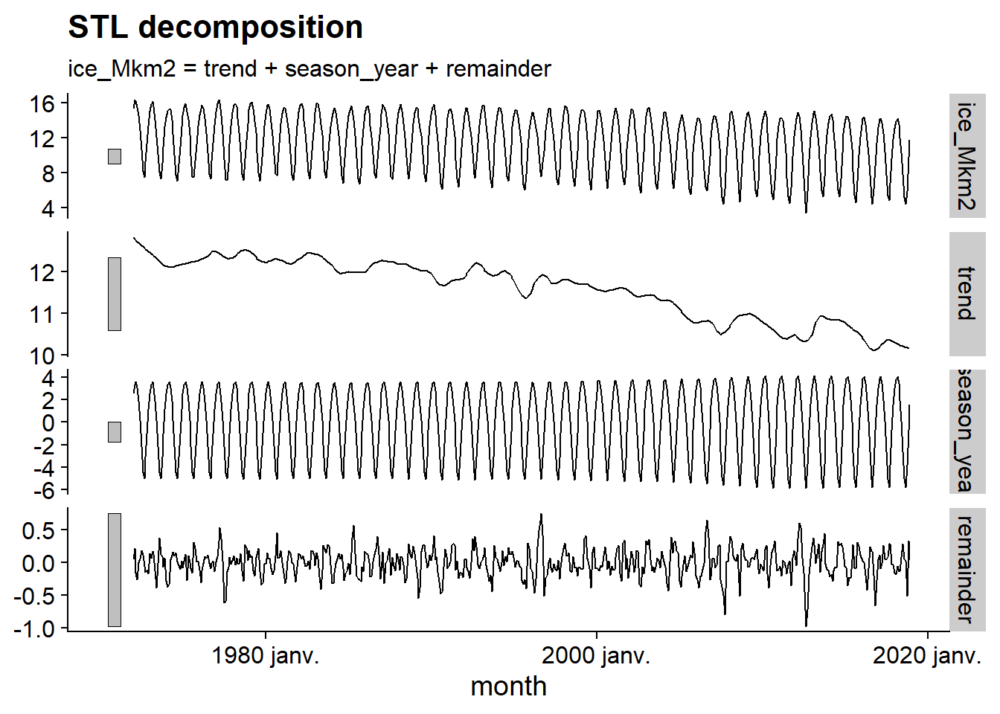
This graph allows us to visualize the general downward trend, the seasonal variation, with an amplitude that increases slightly with time, and then the residual, with a lower amplitude and very fast frequency, resembling random noise. Note that the gray bars to the left of each series have the same scale, which helps to put the importance of each component into perspective.
Autocorrelation
The last concept we will discuss in this section is that of autocorrelation. For a time series \(y\), it is the correlation between \(y_t\) and \(y_{t-k}\) measured for a delay (lag) \(k\), thus the correlation between each measurement of \(y\) and the measurement taken at \(k\) previous intervals.
The function ACF, applied to a tsibble, calculates this autocorrelation for different values of the delay \(k\), which can then be viewed with autoplot.
head(ACF(ice))## Response variable not specified, automatically selected `var = ice_Mkm2`## # A tsibble: 6 x 2 [1M]
## lag acf
## <lag> <dbl>
## 1 1M 0.857
## 2 2M 0.491
## 3 3M 0.0263
## 4 4M -0.411
## 5 5M -0.718
## 6 6M -0.829autoplot(ACF(ice))## Response variable not specified, automatically selected `var = ice_Mkm2`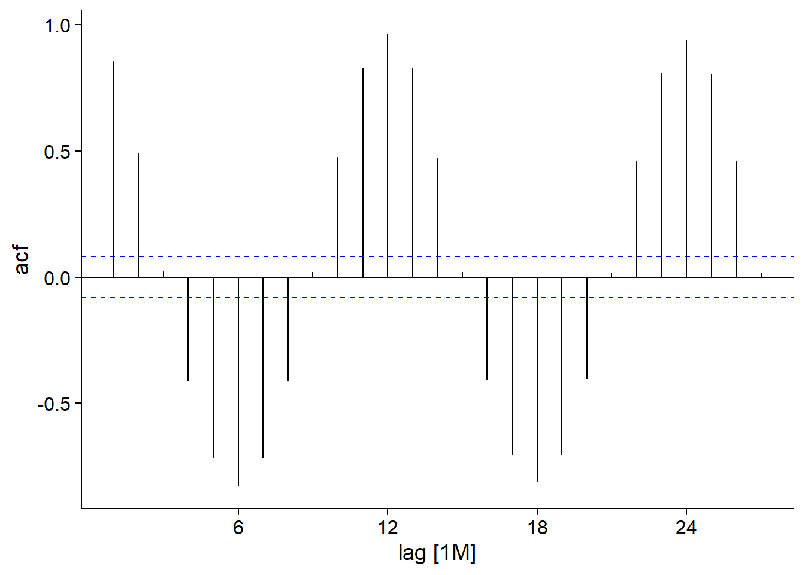
For our ice dataset, we see a strong positive autocorrelation for a period of one month, which decreases to a maximum negative value at 6 months and then continues this cycle every 12 months. This, of course, represents seasonal variation, with opposite trends at a lag of 6 months (summer-winter, spring-fall) and maximum correlation for data from the same month in successive years. The blue dashes represent the significance threshold for the autocorrelation values.
If we had a process without true autocorrelation, then none of the values would be expected to cross this line. However, since this is a 95% interval, 5% of the values will be significant by chance, so the occasional crossing of the line (especially for large lags) should not necessarily be interpreted as true autocorrelation.
Here is the autocorrelation function for the lynx fur time series.
autoplot(ACF(pelt, Lynx))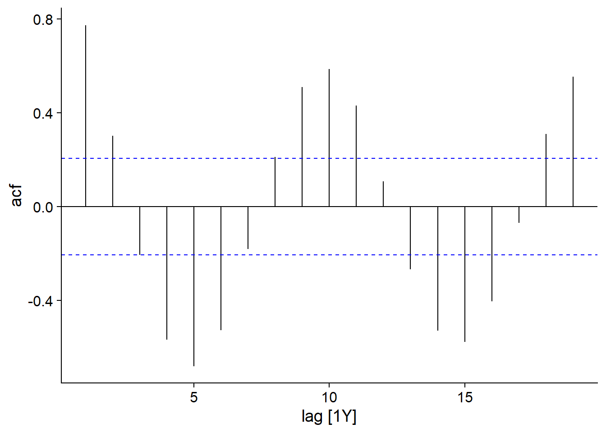
Here, we still see a cyclical behavior repeating itself approximately every 10 years. However, since these cycles are not quite constant, the autocorrelation decreases slightly for each subsequent cycle.
ARIMA models for time series
This part presents the theory of ARIMA models, a class of models used to represent time series.
We first define the concept of stationarity, which is a necessary condition to represent a time series with an ARIMA model.
Stationarity
A time series is stationary if its statistical properties do not depend on the absolute value of the time variable \(t\). In other words, these properties are not affected by any translation of the series over time.
For example, a series with a trend is not stationary because the average of \(y_t\) varies with \(t\).
A series with a seasonal component is also not stationary. Let’s take our example of the Arctic ice surface as a function of time, with a maximum at the end of winter and a minimum at the end of summer. A six-month translation would reverse this minimum and maximum and would no longer represent the same phenomenon.
However, a series with a non-seasonal cycle may be stationary.
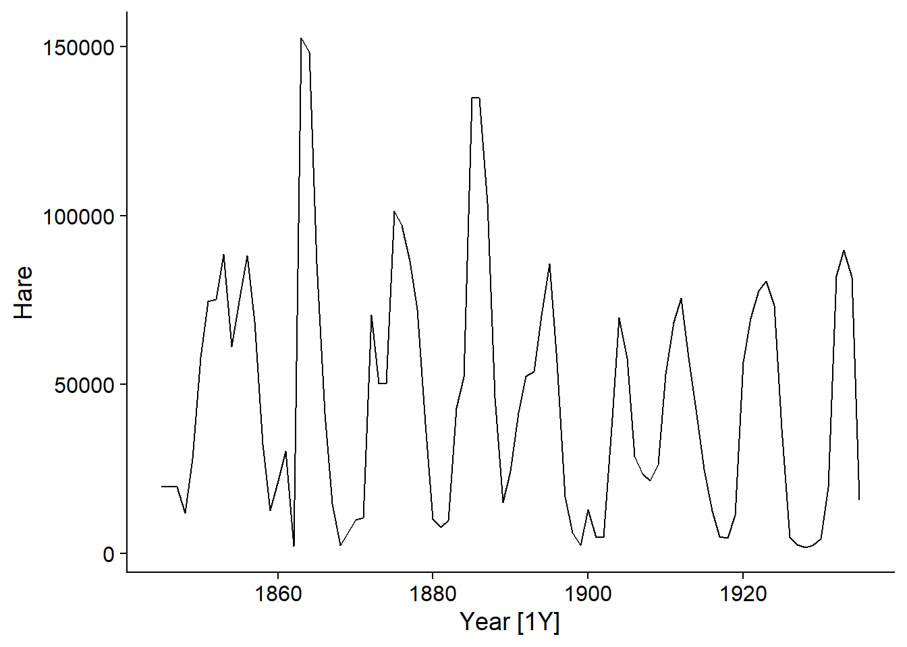
In the example of hare pelts traded at the Hudson’s Bay Company, the cycles we observe are due to the dynamics of the animal’s populations and are not related to a point in time; for example, there is no particular reason why a minimum occurs around the year 1900 and a translation of the series of a few years would not change our model of the phenomenon.
It is important to note that non-stationarity may be due to a stochastic (random) trend rather than a systematic effect.
For example, consider the model of a random walk, where each \(y_t\) value is obtained by adding a normally distributed random value to the previous \(y_{t-1}\) value:
\[y_t = y_{t-1} + \epsilon_t\]
\[\epsilon_t \sim \text{N}(0, \sigma)\]
Here are three time series produced from this model:
## Plot variable not specified, automatically selected `.vars = y`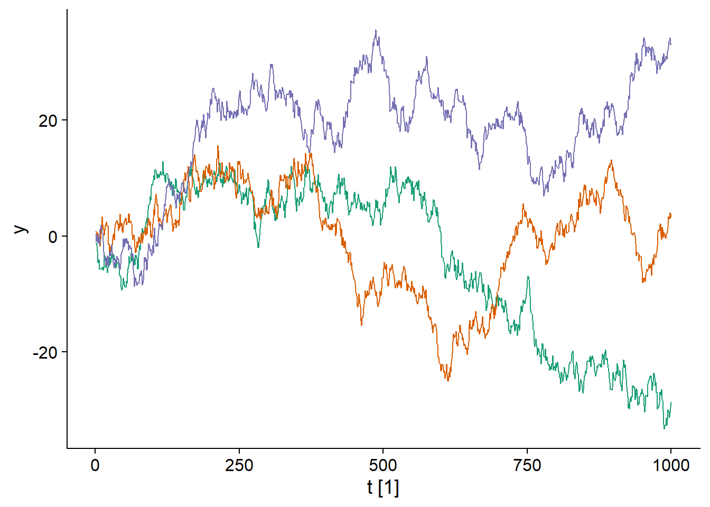
It is clear that each of the three time series is gradually moving away from 0, so this process is not stationary.
Differencing
The random walk shown above does not produce stationary series. However, the difference between two consecutive values (denoted \(y_t'\)) of a random walk is stationary because it is simply the normally distributed variable \(\epsilon_t\).
\[y_t - y_{t-1} = y_t' = \epsilon_t\]
In fact, since all \(\epsilon_t\) have the same distribution and are not correlated over time, it is “white noise”.
## `mutate_if()` ignored the following grouping variables:
## Column `serie`
Differencing is a general method for eliminating a trend in a time series. The difference of order 1:
\[y_t' = y_t - y_{t-1}\]
is usually sufficient to reach a stationary state, but sometimes it is necessary to go to order 2:
\[y_t'' = (y_t - y_{t-1}) - (y_{t-1} - y_{t-2})\]
which is the “difference of differences”.
We will not discuss seasonal patterns in this course, but it is useful to note that the seasonality of a time series can be eliminated by replacing \(y_t\) by its difference between consecutive values of the same season, for example \(y_t' = y_t - y_{t-12}\) for monthly data. In this case \(y_t'\) represents the difference between the value of \(y\) between January and the previous January, February and the previous February, etc.
Moving average model
Moving average models are a subset of ARIMA models. Consider a white noise \(\epsilon_t\) and a variable \(y_t\) that depends on the value of this white noise for different successive periods, for example:
\[y_t = \epsilon_t + 0.6 \epsilon_{t-1} + 0.4 \epsilon_{t-2}\]
\[\epsilon_t \sim \text{N}(0, 1)\]
In this case, the value of \(y_t\) is given by \(\epsilon_t\) to which we add part of the two previous values of \(\epsilon\), that part is determined by the coefficients 0.6 and 0.4. The graph below illustrates a series generated by this model.
–
## Plot variable not specified, automatically selected `.vars = y`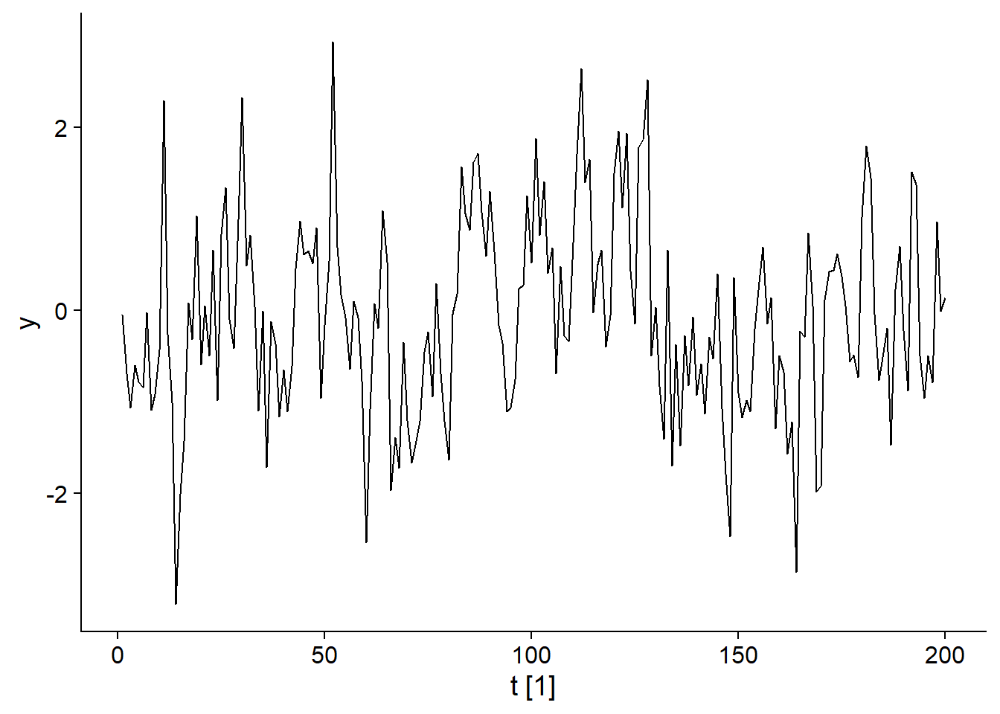
More generally, a moving average model of order \(q\), MA(q), is represented by the equation:
\[y_t = \epsilon_t + \theta_1 \epsilon_{t-1} + ... + \theta_q \epsilon_{t-q}\]
Here, \(y\) is the weighted average of the last \(q+1\) values of a white noise. Concretely, this means that the value of \(y\) depends on random “shocks” \(\epsilon_t\), where the effect of each shock is felt for \(q\) periods of time before disappearing at time \(t+q+1\). For this model, the autocorrelation becomes null for lags \(>q\).
Here is the autocorrelation graph for our example of a MA(2) model: \(y_t = \epsilon_t + 0.6 \epsilon_{t-1} + 0.4 \epsilon_{t-2}\).
## Response variable not specified, automatically selected `var = y`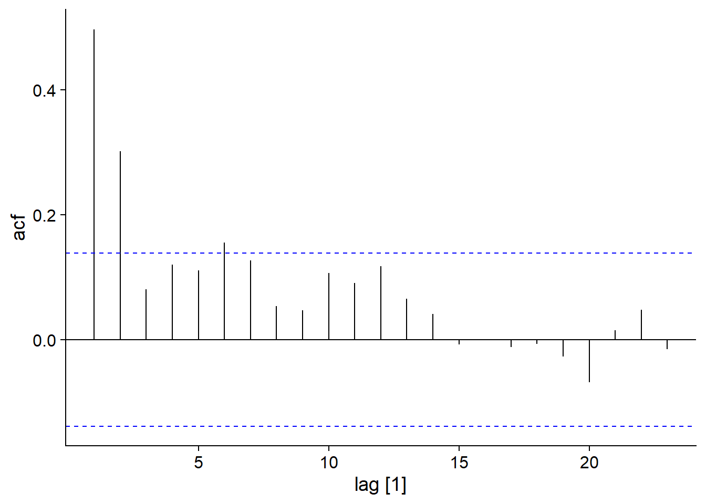
Autoregressive model
Autoregressive (AR) models are another subset of the ARIMA models. As the name suggests, it is a regression between the current and previous values of \(y_t\). For example, here is the graph of the model:
\[y_t = 0.6 y_{t-1} + \epsilon_t\]
## Plot variable not specified, automatically selected `.vars = y`
More generally, in an AR(p) model, \(y_t\) depends of the last \(p\) values of \(y\):
\[y_t = \phi_1 y_{t-1} + ... + \phi_p y_{t-p} + \epsilon_t\]
Certain conditions must be met by the coefficients \(\phi\) to obtain a stationary series. For example, for an AR(1) model, \(\phi_1\) must be less than 1, because \(\phi_1 = 1\) would produce the random walk seen above.
Note that the autocorrelation of \(y_t\) in an AR(p) model extends beyond the lag \(p\). For example, for AR(1), \(y_t\) depends on \(y_{t-1}\), but \(y_{t-1}\) depends on \(y_{t-2}\), so \(y_t\) depends indirectly on \(y_{t-2}\) and so on. However, this indirect dependence diminishes over time.
For example, here is the autocorrelation function for our AR(1) model:
\[y_t = 0.6 y_{t-1} + \epsilon_t\]
## Response variable not specified, automatically selected `var = y`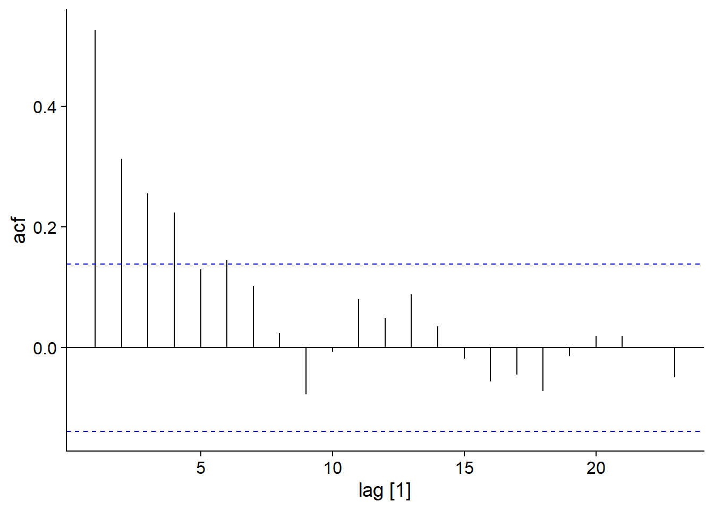
Partial autocorrelation
Partial autocorrelation is defined as the correlation between \(y_t\) and \(y_{t-k}\) that remains after taking into account correlations for all delays below \(k\). In R, this is obtained by the PACF function rather than ACF.
For an AR(1) model, we see that whereas the ACF gradually decreases with \(k\), the PACF becomes insignificant for \(k > 1\), because the subsequent correlations were all indirect effects of the correlation at lag 1.
plot_grid(autoplot(ACF(ar1_sim)), autoplot(PACF(ar1_sim)))## Response variable not specified, automatically selected `var = y`
## Response variable not specified, automatically selected `var = y`
ARIMA model
An ARIMA (autoregressive integrated moving average model) of order (p,d,q) combines an autoregressive model of order \(p\) and a moving average of order \(q\) on the variable \(y\) differentiated \(d\) times.
For example, here is an ARIMA(1,1,2) model:
\[y'_t = c + \phi_1 y'_{t-1} + \epsilon_t + \theta_1 \epsilon_{t-1} + \theta_2 \epsilon_{t-2}\]
The response variable \(y_t'\) (difference between successive values of \(y_t\)) is given by a constant \(c\) (mean level of the series) to which we add an autoregressive term, a noise term \(\epsilon_t\) and two terms of the moving average as a function of the previous \(\epsilon_t\).
There are also ARIMA models with components representing seasonality, i.e. terms based on delays representing the period between two seasons (e.g. delay of 12 for monthly data). We will not see these models in this course, but you can consult the Hyndman and Athanasopoulos textbook for reference on this subject.
Example 1: Lynx pelts traded at the HBC
We will first apply an ARIMA model to the time series of lynx pelts traded to the Hudson’s Bay Company. To make the numbers easier to read, the response variable will be measured in thousands of pelts.
pelt <- mutate(pelt, Lynx = Lynx / 1000)
autoplot(pelt, Lynx)
Choice of ARIMA model
First, we have to choose the \(p\), \(d\) and \(q\) orders of our model. We start by checking if the series must be differenced to obtain a stationary series.
The function unitroot_ndiffs performs a statistical test to determine the minimum number of differences to be made.
unitroot_ndiffs(pelt$Lynx)## ndiffs
## 0Here, the result is 0 so no differencing is necessary (\(d = 0\)).
For a time series containing only an AR or MA component, the order (\(p\) or \(q\)) can be determined by consulting the autocorrelation graphs.
If the data follow an autoregressive model of order \(p\), the partial autocorrelation (PACF) becomes insignificant for lags \(>p\).
If the data follow a moving average model of order \(q\), the autocorrelation (ACF) becomes insignificant for lags \(>q\).
For a model combining AR and MA, however, it is difficult to deduce \(p\) and \(q\) graphically.
Here are the ACF and PACF graphs for lynx pelts:
plot_grid(autoplot(ACF(pelt, Lynx)), autoplot(PACF(pelt, Lynx)))
The partial autocorrelation graph shows large peaks at a lag of 1 (positive correlation) and 2 (negative correlation), so an AR(2) model may be sufficient here.
Fit an ARIMA model
The model function of the fable package allows us to fit different time series models. This package (with a name formed by the contraction of forecast table) was automatically loaded with fpp3.
lynx_ar2 <- model(pelt, ARIMA(Lynx ~ pdq(2,0,0)))In the code above, we indicate that we want to model the data contained in pelt and more precisely apply an ARIMA model for the variable Lynx. The term ARIMA(Lynx ~ pdq(2,0,0)) specifies an AR(2) model \((p = 2, d = 0, q = 0)\).
Note that the ARIMA function estimates the coefficients of the model by the maximum likelihood method.
To see the summary of the model, we do not use summary, but rather report.
report(lynx_ar2)## Series: Lynx
## Model: ARIMA(2,0,0) w/ mean
##
## Coefficients:
## ar1 ar2 constant
## 1.3446 -0.7393 11.0927
## s.e. 0.0687 0.0681 0.8307
##
## sigma^2 estimated as 64.44: log likelihood=-318.39
## AIC=644.77 AICc=645.24 BIC=654.81The table of coefficients shows each of the two autoregression terms (\(\phi_1\) and \(\phi_2\)) and the constant \(c\) representing the mean level of \(y\). Each of the coefficients has its standard error (s.e.) on the bottom line. Finally, sigma^2 indicates the variance of the residuals \(\epsilon_t\) and the last line shows the value of the AIC and the AICc (the BIC is another criterion that we do not see in this course).
Automatic model selection
If we call the ARIMA function without specifying pdq(...), the function will automatically choose an ARIMA model.
lynx_arima <- model(pelt, ARIMA(Lynx))First, ARIMA performs the same test as unitroot_ndiffs to determine the number of differences \(d\), then chooses the values of \(p\) and \(q\) minimizing the AIC by a stepwise method. As we saw in the prerequisite course, sequential methods do not always find the best model. However, in the case of ARIMA models it is rare that the actual data requires \(p\) and \(q\) orders greater than 3, so a simple model is usually sufficient.
report(lynx_arima)## Series: Lynx
## Model: ARIMA(2,0,1) w/ mean
##
## Coefficients:
## ar1 ar2 ma1 constant
## 1.4851 -0.8468 -0.3392 10.1657
## s.e. 0.0652 0.0571 0.1185 0.5352
##
## sigma^2 estimated as 60.92: log likelihood=-315.39
## AIC=640.77 AICc=641.48 BIC=653.33We see here that the optimal model chosen includes not only an autoregression of order 2, but also a moving average of order 1. The AIC value shows a small improvement (AIC decrease of ~4) compared to the AR(2) model.
Diagnostic graphs
The gg_tsresiduals function verifies that the ARIMA residuals meet the model’s assumptions, namely that they are normally distributed and do not have any autocorrelation, which seems to be the case here (based on the autocorrelation graph and the histogram of the residuals in the last row).
gg_tsresiduals(lynx_arima)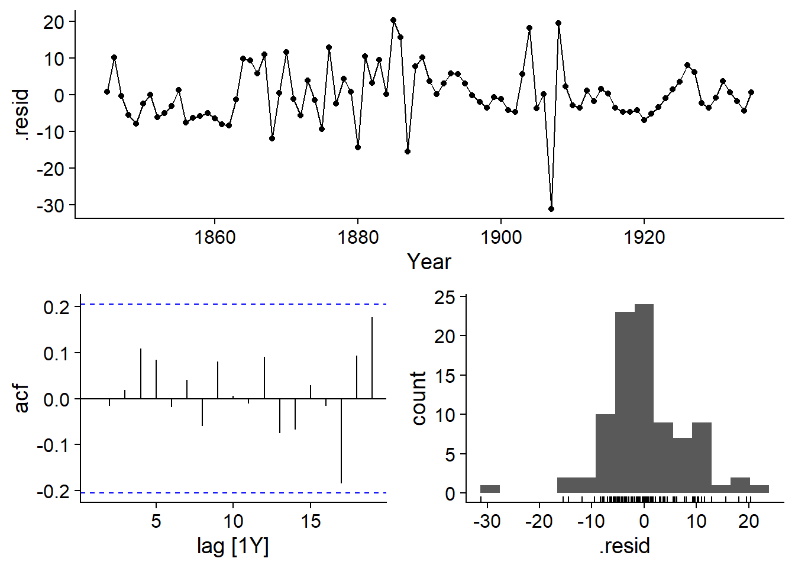
In addition, we can add the expected values of the model (fitted) to the graph of the time series using the autolayer function:
autoplot(pelt, Lynx) +
autolayer(fitted(lynx_arima), linetype = "dashed")## Plot variable not specified, automatically selected `.vars = .fitted`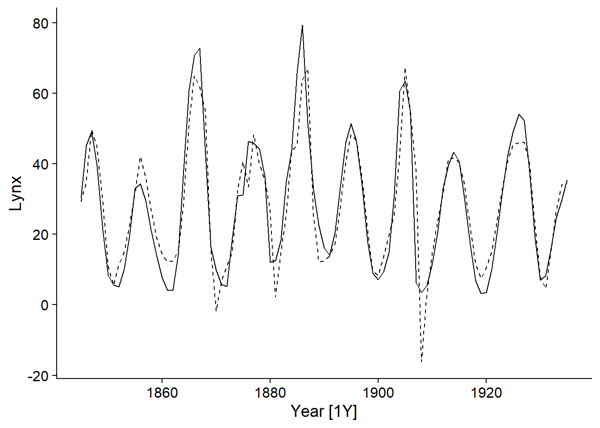
Forecasts
Time series models are often used to make forecasts, or predictions of future values of the variable. Here we apply the forecast function to the lynx_arima model, specifying to make predictions for the next 10 points in time (h = 10).
prev_lynx <- forecast(lynx_arima, h = 10)
head(prev_lynx)## # A fable: 6 x 4 [1Y]
## # Key: .model [1]
## .model Year Lynx .distribution
## <chr> <dbl> <dbl> <dist>
## 1 ARIMA(Lynx) 1936 37.4 N(37, 61)
## 2 ARIMA(Lynx) 1937 35.7 N(36, 141)
## 3 ARIMA(Lynx) 1938 31.5 N(32, 185)
## 4 ARIMA(Lynx) 1939 26.7 N(27, 191)
## 5 ARIMA(Lynx) 1940 23.2 N(23, 196)
## 6 ARIMA(Lynx) 1941 22.0 N(22, 223)The table produced by forecast contains columns for the year (starting in 1936, since the observations end in 1935), the predicted value of the variable Lynx and a distribution of this prediction: N means a normal distribution with two parameters given by the mean and the variance (the latter is used here rather than the standard deviation). This distribution will be used to plot prediction intervals. Note that the variance increases with time.
Predictions can be viewed with autoplot. Adding pelt as a second argument allows the observed and predicted values to be plotted on the same graph, while level specifies the level (in %) of the prediction intervals to be displayed.
autoplot(prev_lynx, pelt, level = c(50, 95))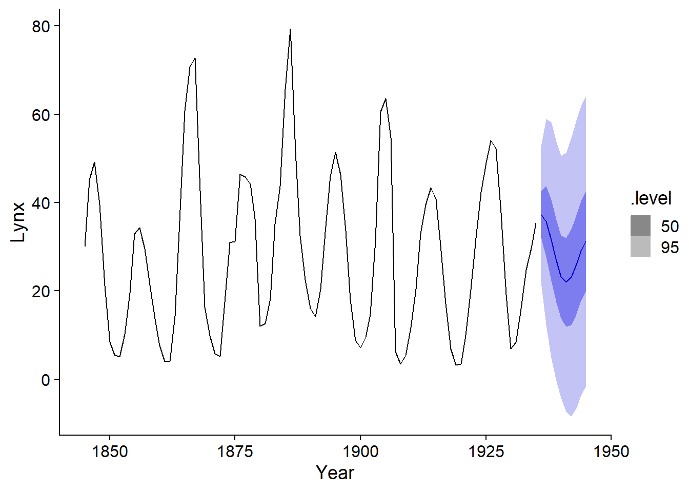
It is clear from this graph that the uncertainty of the forecasts increases further away from the observations. This is due to the fact that the value at time \(t\) depends on the values at the previous time, so the uncertainty accumulates with time.
Example 2: Electricity demand in the state of Victoria
The next example illustrates the use of an ARIMA model with external predictors. We will use the vic_elec dataset included with the fpp3 package, which represents the electricity demand (in MW) recorded every half hour in the Australian state of Victoria.
data(vic_elec)
head(vic_elec)## # A tsibble: 6 x 5 [30m] <Australia/Melbourne>
## Time Demand Temperature Date Holiday
## <dttm> <dbl> <dbl> <date> <lgl>
## 1 2012-01-01 00:00:00 4383. 21.4 2012-01-01 TRUE
## 2 2012-01-01 00:30:00 4263. 21.0 2012-01-01 TRUE
## 3 2012-01-01 01:00:00 4049. 20.7 2012-01-01 TRUE
## 4 2012-01-01 01:30:00 3878. 20.6 2012-01-01 TRUE
## 5 2012-01-01 02:00:00 4036. 20.4 2012-01-01 TRUE
## 6 2012-01-01 02:30:00 3866. 20.2 2012-01-01 TRUEThe other columns show the temperature at the same time, the date and a binary variable Holiday indicating if this date is a holiday.
To work with a larger scale data (daily rather than half-hourly), we aggregate the measurements by date with index_by. We calculate the total demand and the mean temperature per day, the holiday status (any(Holiday) means that there is at least one TRUE value in the group, but in reality this variable is constant for a given date).
vic_elec <- index_by(vic_elec, Date) %>%
summarize(Demand = sum(Demand), Tmean = mean(Temperature),
Holiday = any(Holiday)) %>%
mutate(Workday = (!Holiday) & (wday(Date) %in% 2:6))We also created a variable Workday that identifies the working days, i.e. non-holidays between Monday and Friday; `wday’ is a function that indicates the day of the week between Sunday (1) and Saturday (7).
Finally, we convert the demand to GW to make the numbers easier to read.
vic_elec <- mutate(vic_elec, Demand = Demand / 1000)By representing the demand based on mean temperature and working day status, we see that it follows a roughly quadratic function of temperature (minimum around 18 degrees C and increasing for colder and warmer temperatures) and that there is an almost constant decrease for holidays and weekends.
ggplot(vic_elec, aes(x = Tmean, y = Demand, color = Workday)) +
geom_point() +
scale_color_brewer(palette = "Dark2")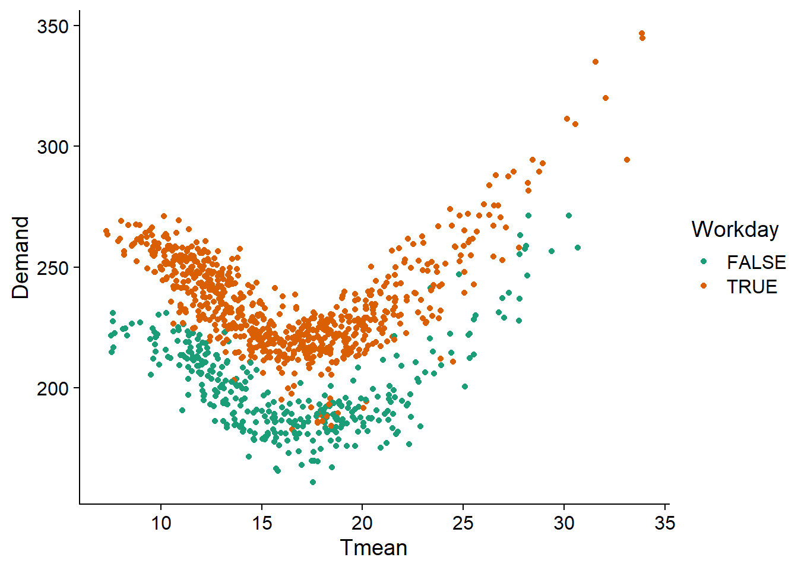
We therefore apply to these data a linear model including a quadratic term for temperature (it is necessary to surround the term Tmean^2 with I() in R) and an additive effect of Workday. As we can see, this model describes the observed pattern well.
elec_lm <- lm(Demand ~ Tmean + I(Tmean^2) + Workday, vic_elec)
ggplot(vic_elec, aes(x = Tmean, y = Demand, color = Workday)) +
geom_point(alpha = 0.3) +
geom_line(aes(y = fitted(elec_lm))) +
scale_color_brewer(palette = "Dark2")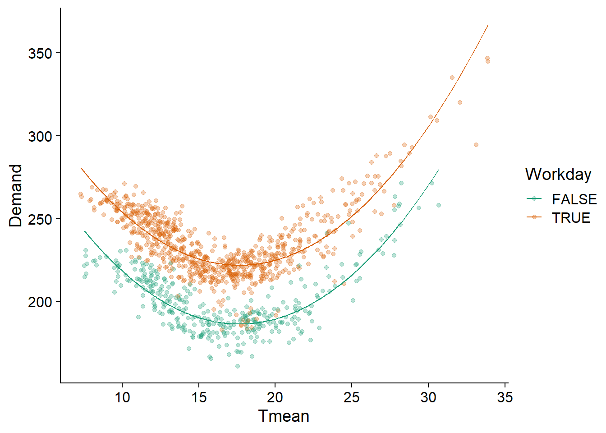
However, by visualizing the residuals of the model as a function of the date, we see that a temporal correlation persists. It would therefore be useful to represent these residuals by an ARIMA model.
ggplot(vic_elec, aes(x = Date, y = residuals(elec_lm), color = Workday)) +
geom_point() +
scale_color_brewer(palette = "Dark2")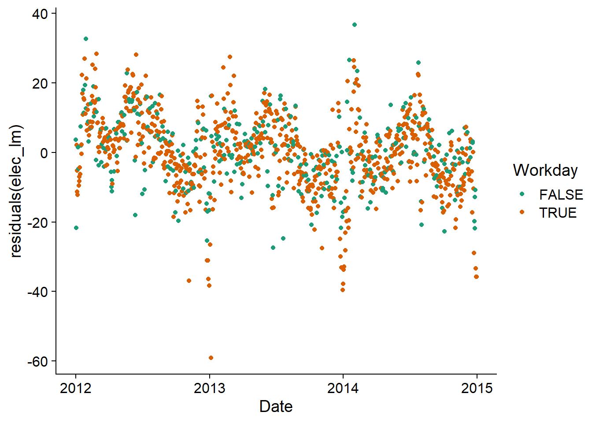
In the ARIMA() model, we specify the formula linking the response to the predictors as in an lm, then we add the ARIMA terms if necessary (otherwise the function chooses the model automatically, as seen earlier).
elec_arima <- model(vic_elec, ARIMA(Demand ~ Tmean + I(Tmean^2) + Workday + PDQ(0,0,0)))Here, note that PDQ(0,0,0) specifies that there is no seasonal component, because the automatic selection method would choose a model with seasonality here, a type of model that we do not cover in this course.
This function should not be confused with pdq (lowercase), which specifies the order of the basic ARIMA model.
The chosen model has a difference of order 1, so we model the difference in demand as a function of the difference in temperature. It also includes 2 autoregression terms and 3 moving average terms.
report(elec_arima)## Series: Demand
## Model: LM w/ ARIMA(1,1,4) errors
##
## Coefficients:
## ar1 ma1 ma2 ma3 ma4 Tmean I(Tmean^2)
## -0.7906 0.3727 -0.4266 -0.1977 -0.1488 -11.9062 0.3692
## s.e. 0.0941 0.0989 0.0481 0.0407 0.0284 0.3775 0.0096
## WorkdayTRUE
## 32.7278
## s.e. 0.4453
##
## sigma^2 estimated as 46.14: log likelihood=-3647.85
## AIC=7313.7 AICc=7313.87 BIC=7358.69Residues appear to be close to normal, but there is still significant autocorrelation. Notably, the positive autocorrelation at 7, 14, 21 and 28 days suggests that there is a weekly pattern not accounted for by the distinction between working and non-working days.
gg_tsresiduals(elec_arima)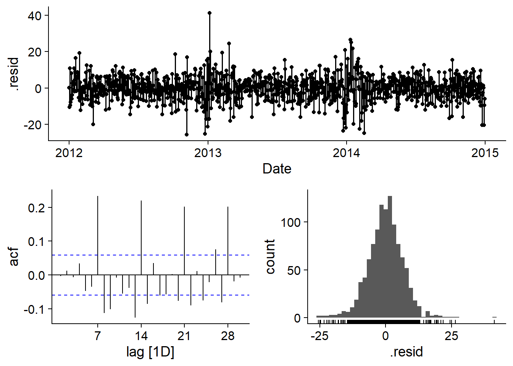
Forecasts
When a model includes external predictors, the value of these predictors must be specified for new time periods in order to make predictions.
We use the function new_data(vic_elec, 14) to create a dataset containing the 14 dates following the series present in vic_elec (thus starting from January 1st, 2015), then we add values for the predictors Tmean and Workday. To simplify here, the predicted temperature is constant.
prev_df <- new_data(vic_elec, 14) %>%
mutate(Tmean = 20, Workday = TRUE)
head(prev_df)## # A tsibble: 6 x 3 [1D]
## Date Tmean Workday
## <date> <dbl> <lgl>
## 1 2015-01-01 20 TRUE
## 2 2015-01-02 20 TRUE
## 3 2015-01-03 20 TRUE
## 4 2015-01-04 20 TRUE
## 5 2015-01-05 20 TRUE
## 6 2015-01-06 20 TRUEThen we specify this dataset as new_data in the forecast function. The data and forecasts are shown with autoplot; the addition of coord_cartesian allows us to zoom on the end of the series to better see the forecasts.
prev_elec <- forecast(elec_arima, new_data = prev_df)
autoplot(prev_elec, vic_elec) +
coord_cartesian(xlim = c(as_date("2014-11-01"), as_date("2015-01-15")))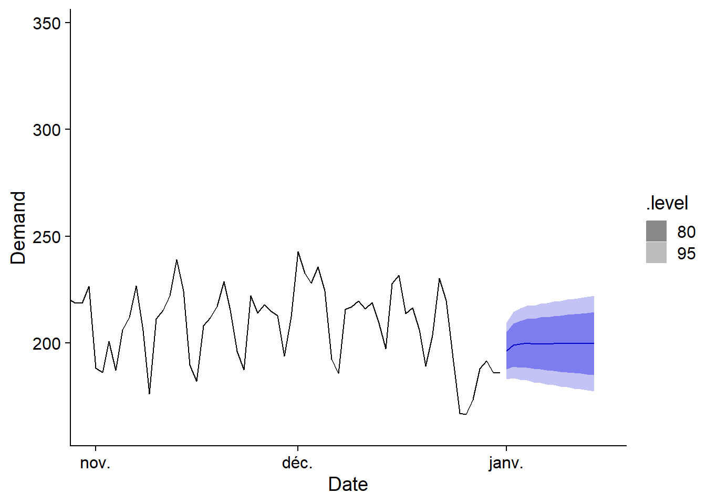
Summary of R functions
Here are the main R functions presented in this course, which come from packages loaded with fpp3.
as_tsibble(..., index = ...): Convert adata.frametotsibble, specifying the time column withindex.index_by: Group atsibblefor temporal aggregation.ACFandPACF: functions to compute autocorrelation and partial autocorrelation from atsibble.model: Create a time series model from a dataset and a specific modeling function, such asARIMA.ARIMA(y ~ x + pdq(...) + PDQ(...)): Defines a model for \(y\) based on external predictors \(x\). We can specify the order of the ARIMA withpdqor seasonal ARIMA withPDQ, otherwise the function automatically chooses the order of the model to minimize the AIC.forecast(mod, h = ...)orforecast(mod, new_data = ...): Produces forecasts from themodmodel for the nexthtime periods, or for a forecast dataset defined innew_data.autoplot: Produces a ggplot2 graph adapted to the given object (e.g.: time series for atsibble, correlation graph for ACF or PACF, forecast graph for the result offorecast).gg_seasonandgg_subseries: Graphs to illustrate the seasonality of a time series.gg_tsresiduals: Diagnostic graphs for the residuals of a time series model.
Additive and Bayesian models with temporal correlations
Multiple time series
In the previous examples, all the data came from the same time series. However, it is common to want to fit the same model (with the same parameters) to several independent time series. For example, we could fit a common growth model for several trees of the same species, or a model for the abundance of the same species at several sites.
Note that a temporal data table (tsibble) can contain several time series, but in this case, fitting an ARIMA model to this table is done separately for each series, with different parameters for each.
Integration of temporal correlations with other models
In this part, we will see how to add a temporal correlation of ARMA type to the residuals of a GAM (with mgcv) or of a hierarchical Bayesian model (with brms).
These models are therefore models without differencing (the “I” in ARIMA is missing), but in any case the residuals should be stationary and any trend should be included in the main model.
In this approach, we will also not be able to make an automatic selection of \(p\) and \(q\). So we have to select these parameters manually, either according to our theoretical knowledge, by visualizing the ACF and PACF, or by comparing the AIC of several models.
Example: Dendrochronological series
We use for this example the data set wa082 from the dendrochronological analysis package dplr, which presents basal area growth series (based on tree ring width) for 23 individuals of the species Abies amabilis. This dataset has already been used in the laboratory on generalized additive models.
As in this laboratory, we first have to rearrange the data set to obtain columns representing basal area growth (cst), cumulative basal area (st) and age for each tree in each year.
library(tidyr)
# Load data
wa <- read.csv("../donnees/dendro_wa082.csv")
# Transform to a "long" format (rather than a tree x year matrix)
wa <- pivot_longer(wa, cols = -year, names_to = "id_arbre",
values_to = "cst", values_drop_na = TRUE)
# Calculate the age and cumulative basal area
wa <- arrange(wa, id_arbre, year) %>%
group_by(id_arbre) %>%
mutate(age = row_number(), st = cumsum(cst)) %>%
ungroup() %>%
rename(annee = year) %>%
mutate(id_arbre = as.factor(id_arbre))
head(wa)## # A tibble: 6 x 5
## annee id_arbre cst age st
## <int> <fct> <dbl> <int> <dbl>
## 1 1811 X712011 7.35 1 7.35
## 2 1812 X712011 19.2 2 26.6
## 3 1813 X712011 32.3 3 58.9
## 4 1814 X712011 48.6 4 108.
## 5 1815 X712011 58.5 5 166.
## 6 1816 X712011 67.4 6 233.Fitting with gamm
First, here are the results of the model of growth versus basal area (linear effect on a log-log scale) and age (represented by a spline), with a random effect for each tree.
library(mgcv)
gam_wa <- gam(log(cst) ~ log(st) + s(age) + s(id_arbre, bs = "re"), data = wa)
plot(gam_wa, pages = 1)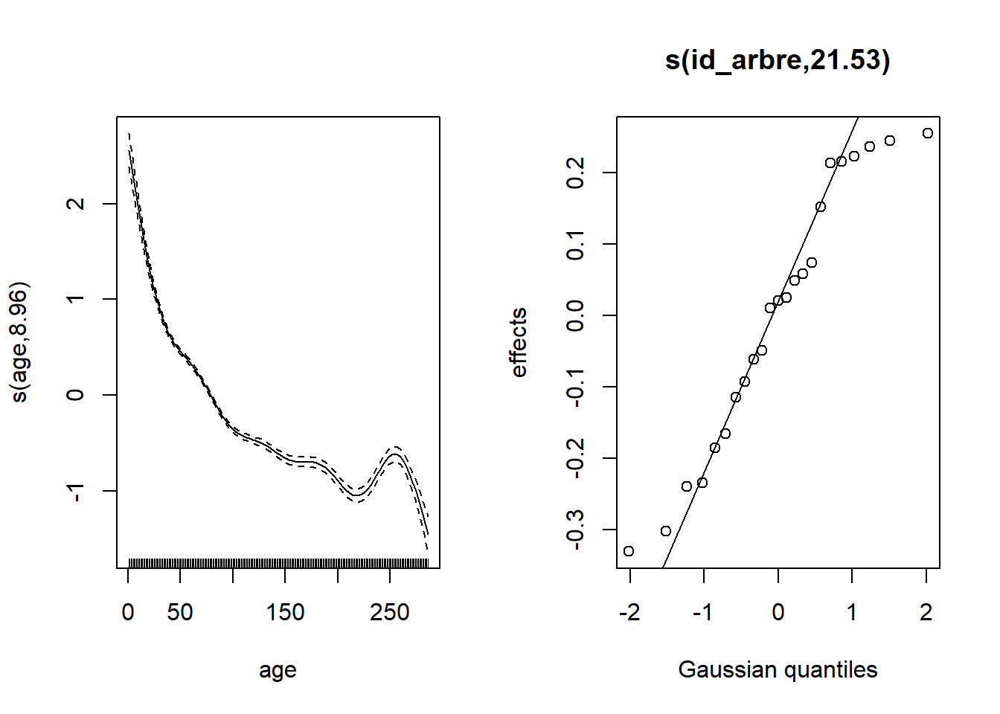
In order to add temporal correlations, we will instead use the gamm function, which represents random effects differently, because it is based on the lme function of the nlme package. (This is another package for random effects. As we will see later, it has limitations compared to the package lme4 we used in this course. However, it has the advantage of including temporal correlations.)
Fixed effects are represented in the same way in gamm or gam, but the random effect appears in a list under the argument random. Here, id_arbre = ~1 means a random effect of id_arbre on the intercept.
gam_wa2 <- gamm(log(cst) ~ log(st) + s(age), data = wa,
random = list(id_arbre = ~1))
gam_wa2$lme## Linear mixed-effects model fit by maximum likelihood
## Data: strip.offset(mf)
## Log-likelihood: -1958.017
## Fixed: y ~ X - 1
## X(Intercept) Xlog(st) Xs(age)Fx1
## -2.8430849 0.8926357 -3.6526718
##
## Random effects:
## Formula: ~Xr - 1 | g
## Structure: pdIdnot
## Xr1 Xr2 Xr3 Xr4 Xr5 Xr6 Xr7 Xr8
## StdDev: 5.359563 5.359563 5.359563 5.359563 5.359563 5.359563 5.359563 5.359563
##
## Formula: ~1 | id_arbre %in% g
## (Intercept) Residual
## StdDev: 0.1834672 0.3666839
##
## Number of Observations: 4536
## Number of Groups:
## g id_arbre %in% g
## 1 23The random effect of id_arbre appears in the results under: Formula: ~1 | id_arbre %in% g (there is a standard deviation of 0.18 between trees, compared with a residual standard deviation of 0.37).
Adding a temporal correlation
Suppose that growth is correlated between successive years for the same tree, even after taking into account the fixed effects of age and basal area.
We can add this correlation to the gamm model with the argument correlation = corAR1(form = ~ 1 | id_arbre). This means that there is an autocorrelation of type AR(1) within the measurements grouped by tree.
gam_wa_ar <- gamm(log(cst) ~ log(st) + s(age), data = wa,
random = list(id_arbre = ~1),
correlation = corAR1(form = ~ 1 | id_arbre))
gam_wa_ar$lme## Linear mixed-effects model fit by maximum likelihood
## Data: strip.offset(mf)
## Log-likelihood: -567.5418
## Fixed: y ~ X - 1
## X(Intercept) Xlog(st) Xs(age)Fx1
## -2.6964027 0.8779548 -3.3712324
##
## Random effects:
## Formula: ~Xr - 1 | g
## Structure: pdIdnot
## Xr1 Xr2 Xr3 Xr4 Xr5 Xr6 Xr7 Xr8
## StdDev: 4.92288 4.92288 4.92288 4.92288 4.92288 4.92288 4.92288 4.92288
##
## Formula: ~1 | id_arbre %in% g
## (Intercept) Residual
## StdDev: 0.1718674 0.3730067
##
## Correlation Structure: AR(1)
## Formula: ~1 | g/id_arbre
## Parameter estimate(s):
## Phi
## 0.6870206
## Number of Observations: 4536
## Number of Groups:
## g id_arbre %in% g
## 1 23The parameter \(\phi_1\) for autocorrelation is 0.687, so the growth indeed shows a positive correlation between successive years.
By comparing the spline representing the effect of age between the two models, the uncertainty is greater for the model with autocorrelation. This is consistent with the fact that autocorrelation reduces the number of independent measurements.
par(mfrow = c(1, 2))
plot(gam_wa2$gam, select = 1, main = "GAMM")
plot(gam_wa_ar$gam, select = 1, main = "GAMM AR(1)")
To specify a more general ARMA model, we could use corARMA, e.g.: correlation = corARMA(form = ~ 1 | id_arbre, p = 2, q = 1) for an AR(2), MA(1) model.
The lme function of the nlme package offers the same functionality for mixed linear models (without additive effects), with the same random and correlation arguments.
Mixed models specified with gamm and lme have some limitations. First, these functions are less well-suited for fitting generalized models (distributions other than normal for the response). Also, they do not allow for multiple random effects unless these are nested.
For these reasons, Bayesian models (with brms) offer the most flexible option for combining random effects and time correlations in the same model.
Bayesian version of the model with brms
The brm function recognizes the spline terms s(), as in a gam. The temporal correlation term is specified by ar(p = 1, gr = id_arbre), which means an AR(1) correlation within groups defined by id_arbre.
library(brms)
wa_br <- brm(log(cst) ~ log(st) + s(age) + (1 | id_arbre) + ar(p = 1, gr = id_arbre),
data = wa, chains = 2)Instead of ar(p = ...), we could have specified an MA model with ma(q = ...) or ARMA model with arma(p = ..., q = ...).
Note that in this example, we let brms choose prior distributions by default. For splines in particular, it is difficult to determine these distributions and the default choices are reasonable, especially with a lot of data.
In the summary of results, we obtain the same AR(1) correlation coefficient as for the gamm model above.
summary(wa_br)## Family: gaussian
## Links: mu = identity; sigma = identity
## Formula: log(cst) ~ log(st) + s(age) + (1 | id_arbre) + ar(p = 1, gr = id_arbre)
## Data: wa (Number of observations: 4536)
## Samples: 2 chains, each with iter = 2000; warmup = 1000; thin = 1;
## total post-warmup samples = 2000
##
## Smooth Terms:
## Estimate Est.Error l-95% CI u-95% CI Rhat Bulk_ESS Tail_ESS
## sds(sage_1) 4.99 1.38 3.01 8.46 1.01 454 597
##
## Correlation Structures:
## Estimate Est.Error l-95% CI u-95% CI Rhat Bulk_ESS Tail_ESS
## ar[1] 0.69 0.01 0.67 0.71 1.00 1594 1495
##
## Group-Level Effects:
## ~id_arbre (Number of levels: 23)
## Estimate Est.Error l-95% CI u-95% CI Rhat Bulk_ESS Tail_ESS
## sd(Intercept) 0.19 0.03 0.13 0.25 1.01 405 906
##
## Population-Level Effects:
## Estimate Est.Error l-95% CI u-95% CI Rhat Bulk_ESS Tail_ESS
## Intercept -2.49 0.21 -2.91 -2.07 1.00 829 984
## logst 0.86 0.02 0.82 0.90 1.00 903 1065
## sage_1 -21.98 2.62 -27.04 -16.86 1.00 902 1003
##
## Family Specific Parameters:
## Estimate Est.Error l-95% CI u-95% CI Rhat Bulk_ESS Tail_ESS
## sigma 0.27 0.00 0.27 0.28 1.00 1993 1554
##
## Samples were drawn using sampling(NUTS). For each parameter, Bulk_ESS
## and Tail_ESS are effective sample size measures, and Rhat is the potential
## scale reduction factor on split chains (at convergence, Rhat = 1).Finally, we can visualize the spline representing basal area increments vs. age with the marginal_smooths function.
marginal_smooths(wa_br)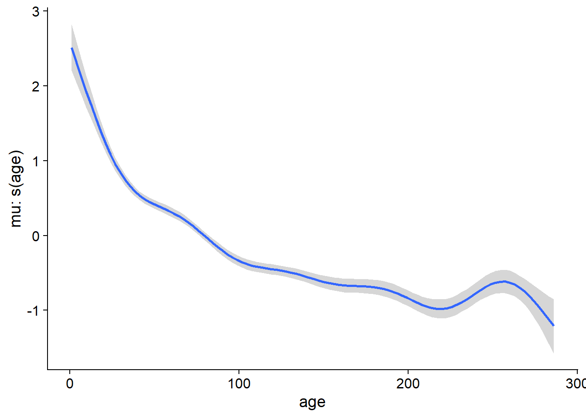
Reference
Hyndman, R.J. and Athanasopoulos, G. (2019) Forecasting: principles and practice, 3rd edition, OTexts: Melbourne, Australia. http://OTexts.com/fpp3.